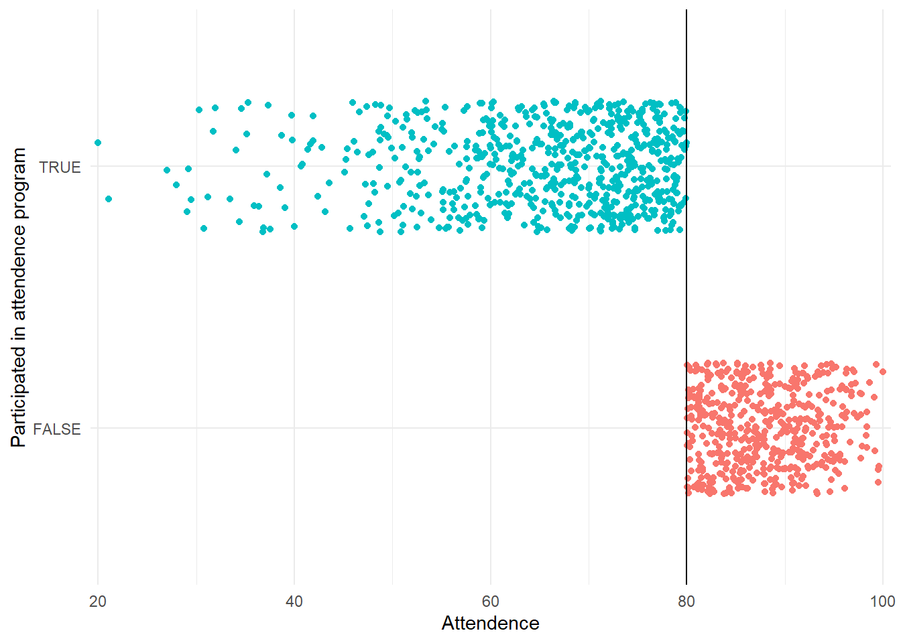
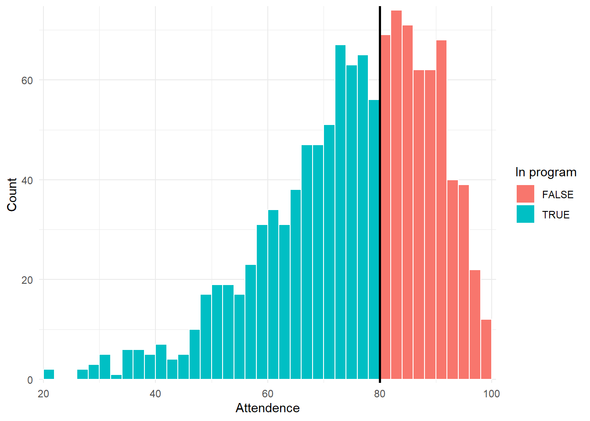
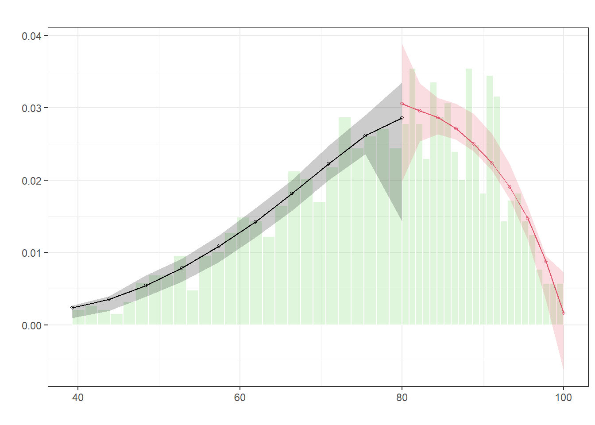
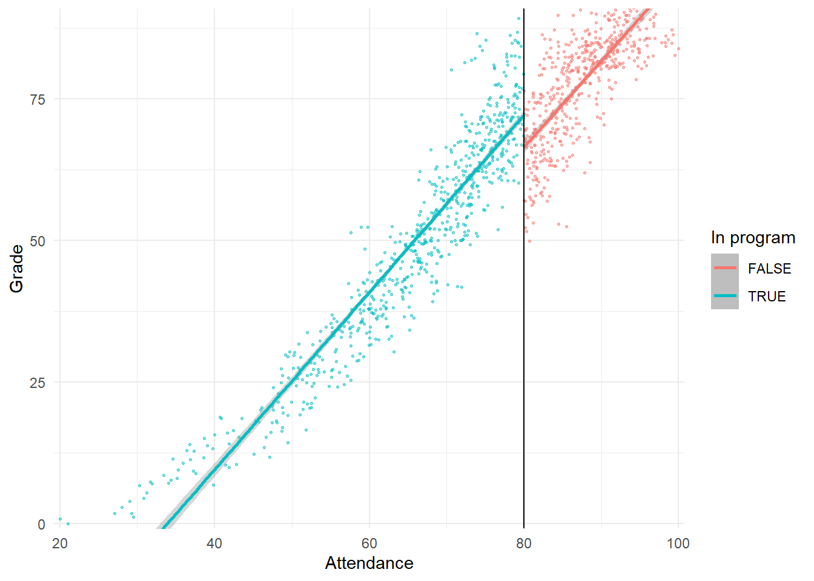
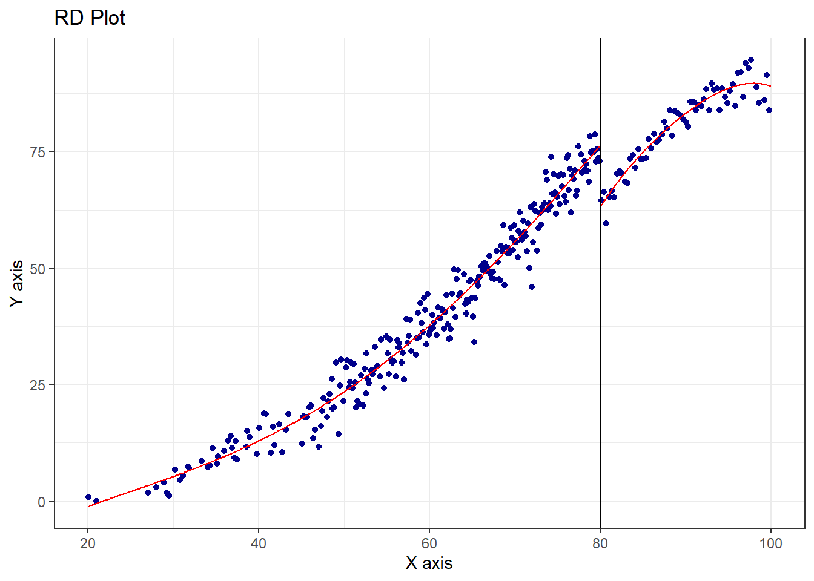
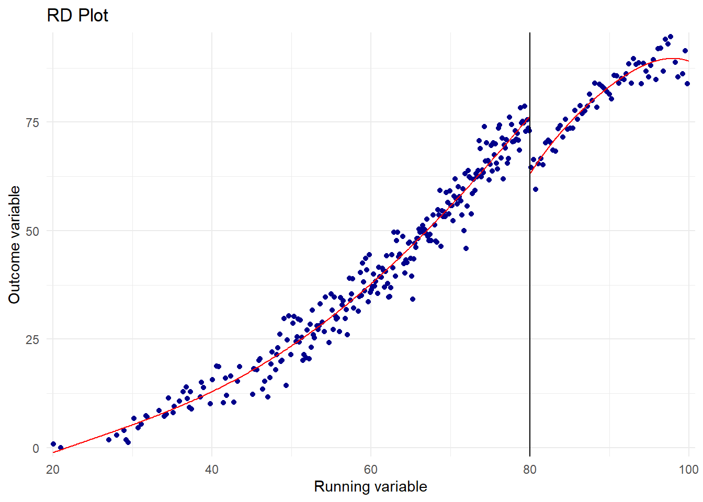

knitr::opts_chunk$set(message = FALSE, warning = FALSE)
library(tidyverse)
library(rdrobust)
library(rddensity)
library(broom)
library(modelsummary)
library(kableExtra)
# This turns off this message that appears whenever you use summarize():
# `summarise()` ungrouping output (override with `.groups` argument)
options(dplyr.summarise.inform = FALSE)
program <- read_csv("data/attendance_program.csv")There is substantial research and evidence that class attendance has a positive and significant effect on student performance. Because of this, state and local government agencies and school districts have designed programs and policies that incentivize students to not miss school days. Examples include tangible prizes like colorful pendants and free tickets to events, automated calls from celebrities, or class policies that mandate attendance.
Existing research has used a range of methods to test the relationship between attendance programs and student performance, including simple regression analysis, randomized experiments, and regression discontinuity approaches.
In this assignment, you will use regression discontinuity approaches to measure the effect of a hypothetical program on hypothetical student grades (this data is 100% fake).
In this simulated program, high school students who have less than 80% attendance during their junior year (11th grade) are assigned to a mandatory school attendance program during their senior year (12th grade). This program requires them to attend school and also provides them with additional support and tutoring to help them attend and remain in school. At the end of their senior year, students take a final test to assess their overall learning in high school.
The dataset I’ve provided contains four columns:
id: A randomly assigned student ID numberattendance: The proportion of days of school attended during a student’s junior year (ranges from 0 to 100)treatment: Binary variable indicating if a student was assigned to the attendance program during their senior yeargrade: A student’s final test grade at the end of their senior year
Step 1: Determine if process of assigning treatment is rule-based
Was assignment to this program based on an arbitrary rule?
Yes, assigment to the program was based on the proportion of school days attended.
Is it a good candidate for a regression discontinuity approach? Why or why not?
Yes, this is a good candidate for regression discontinuity because an argument can be made that the students with just below and just above the arbitrary cutoff are similar enough to each other that they can be compared in order to measure the size of the impact of the program.
Step 2: Determine if the design is fuzzy or sharp
Make a plot that shows the running variable (attendance) on the x-axis and the program indicator variable (treatment) on the y-axis. Show the relationship using points (geom_point) and color the points by treatment.
How strict was the application of the rule? Did any students with attendance above 80% get into the attendance program, or did any students with attendance under 80% not get into the program? Is there a sharp difference in treatment at the cutpoint?
According to the data, the rule is perfectly strict. There are no students in the program with an attendance of over 80, and there are no students with attendance below 80% who are not in the program. There is a very sharp difference in the treatment at the cutpoint.
# Dot plot with attendance on the x-axis and treatment on the y-axis
program %>%
ggplot(aes(attendance, treatment, color = treatment)) +
geom_point(position = position_jitter(width = 0, height = 0.25, seed = 1234)) +
geom_vline(xintercept = 80) +
labs(x = "Attendence", y = "Participated in attendence program") +
guides(color = "none") +
theme_minimal() +
scale_x_continuous(expand = expansion(mult = 0.01, add = 0))
Step 3: Check for discontinuity in running variable around cutpoint
Next, you should check that there was no manipulation in the running variable. We don’t want to see a ton of students with 81% or 79% attendance, since that could be a sign that administrators fudged the numbers to either push students into the program or out of the program.
First, make a histogram of the running variable and see if there are any big jumps around the threshold. Fill the histogram by treatment and add a vertical line at 80 (geom_vline(xintercept = 80)) to show the cutoff. Use an approprite bin width. If the column near 80 is split into two different colors (it might be, since it might be showing 79 and 80 together), add boundary = 80 inside geom_histogram() to force ggplot to start a bar at 80 and not include 79.
Does it look like there’s an unexpected jump in the running variable around the cutoff?
Although there is a slight jump in the running variable in the bin just above 80%, the upper side of 80% has more students overall so it does not appear that it should impact the results.
# Histogram of attendance
program %>%
ggplot(aes(x = attendance, fill = treatment)) +
geom_histogram(binwidth = 2, color = "white", boundary = 70) +
geom_vline(xintercept = 80, size = 1) +
labs(x = "Attendence", y = "Count", fill = "In program") +
theme_minimal() +
scale_x_continuous(expand = expansion(mult = 0.01, add = 0)) +
scale_y_continuous(expand = expansion(mult = 0.01, add = 0))
Next, conduct a McCrary density test with rdplotdensity() from the rddensity library. Refer to the in-class example for the syntax (you’ll need to specify rdd, X (note that it’s capitalized), and type = "both"). Also, if you don’t want two plots to show up when you knit, make sure you assign the output of rdplotdensity() to a variable.
Is there a substantial jump at the cutpoint?
Again, there is only a small jump at the cutpoint. It does not appear to be a problematic inconsistency.
# McCrary test
test_density <- rddensity(program$attendance, c = 80)
summary(test_density)
Manipulation testing using local polynomial density estimation.
Number of obs = 1200
Model = unrestricted
Kernel = triangular
BW method = estimated
VCE method = jackknife
c = 80 Left of c Right of c
Number of obs 681 519
Eff. Number of obs 384 421
Order est. (p) 2 2
Order bias (q) 3 3
BW est. (h) 13.574 12.521
Method T P > |T|
Robust 0.7748 0.4384
P-values of binomial tests (H0: p=0.5).
Window Length / 2 <c >=c P>|T|
0.820 20 28 0.3123
1.640 50 63 0.2589
2.460 72 90 0.1815
3.280 102 110 0.6308
4.100 126 146 0.2493
4.920 149 172 0.2194
5.740 175 205 0.1367
6.560 198 232 0.1114
7.380 229 254 0.2748
8.200 258 280 0.3653plot_density_test <- rdplotdensity(rdd = test_density,
X = program$attendance,
type = "both")
Step 4: Check for discontinuity in outcome across running variable
Make a scatterplot with the running variable on the x-axis (attendance) and the outcome variable on the y-axis (grade), with the points colored by treatment (treatment). Make the points small (size = 0.5 or something similar) and semitransparent (alpha = 0.5 or something similar) since there are a lot of them. Add a vertical line at the cutoff point. Add two geom_smooth() lines: one using data before the cutoff and one using data after the cutoff. Make sure both lines use method = "lm". Refer to the example for the code you need to do this.
Based on this graph, does the program have an effect? Is there a discontinuity in outcome around the cutpoint? Interpret the effect (or non-effect) of the program.
Based on this graph, the program does seem to have some amount of effect. There is certainly a discontinuity in the outcome around the cutpoint. The effect of the program appears to be a positive impact on grades for students below the cutpoint.
# Graph showing discontinuity in grades across levels of attendance
program %>%
ggplot(aes(x = attendance, y = grade, color = treatment), boundary = 0) +
geom_point(size = 0.5, alpha = 0.5) +
geom_smooth(data = filter(program, attendance <= 80), method = "lm") +
geom_smooth(data = filter(program, attendance > 80), method = "lm") +
geom_vline(xintercept = 80) +
labs(x = "Attendance", y = "Grade", color = "In program") +
theme_minimal() +
coord_cartesian(ylim = c(0, 90)) +
scale_x_continuous(expand = expansion(mult = 0.01, add = 0)) +
scale_y_continuous(expand = expansion(mult = 0.01, add = 0))
Step 5: Measure the size of the effect
Now you need to measure the size and statistical significance of the discontinuity. If there’s a jump because of the program, how big is it and how much can we trust it? You’ll do this two ways: (1) parametrically with linear regression and (2) nonparametrically with curvy lines and fancy econometrics algorithms built in to the rdrobust() function.
Parametric estimation
Create a new dataset based on program that has a new variable in it named attendance_centered. This will be the value of attendance minus 80. This centers student attendance around the cutpoint (if a student had 85% attendance, they’d have a value of 5; if they had 70% attendance, they’d have a value of 10; etc.) and makes it easier to interpret the intercept coefficient in linear models since it shifts the y-intercept up to the cutpoint instead of zero.
# Add column to program that centers attendance
program1 <- program %>%
mutate(attendance_centered = attendance - 80)Run a regression model explaining grade with attendance_centered + treatment:
\[ \text{Grade} = \beta_0 + \beta_1 \text{Attendance (centered)} + \beta_2 \text{Program} + \epsilon \]
Make sure you use the data frame that has your new attendance_centered variable.
Interpret the three coefficients. How big is the effect of the program? Is it statistically significant?
The intercept is the estimated outcome if the attendance is at the cutoff of 80% and the treatment was not assigned. The attendance coefficient shows that as attendance goes up by 1%, the estimated grade increases by 1.56. The treatment coefficient shows that the students who were in the program saw an increase of 5.88 in their final grade.
# Linear model
model <- lm(grade ~ attendance_centered + treatment,
data = program1)
tidy(model)# A tibble: 3 × 5
term estimate std.error statistic p.value
<chr> <dbl> <dbl> <dbl> <dbl>
1 (Intercept) 66.2 0.330 201. 0
2 attendance_centered 1.56 0.0203 76.6 0
3 treatmentTRUE 5.88 0.595 9.89 3.07e-22Now make two new datasets based on the one you made previously with the attendance_centered variable. Filter one so that it only contains observations where attendance_centered is between -5 and 5, and filter the other so that it only contains observations where attendance_centered is between -10 and 10.
Run the same model (grade ~ attendance_centered + program) using each of these data frames. Interpret the coefficients. Are they different from the model that uses the complete data?
# Data and model with bandwidth = 5
model_5 <- lm(grade ~ attendance_centered + treatment,
data = filter(program1,
attendance_centered >= -5 &
attendance_centered <= 5))
tidy(model_5)# A tibble: 3 × 5
term estimate std.error statistic p.value
<chr> <dbl> <dbl> <dbl> <dbl>
1 (Intercept) 64.0 0.859 74.6 2.68e-207
2 attendance_centered 2.15 0.272 7.91 4.07e- 14
3 treatmentTRUE 12.3 1.57 7.84 6.62e- 14# Data and model with bandwidth = 10
model_10 <- lm(grade ~ attendance_centered + treatment,
data = filter(program1,
attendance_centered >= -10 &
attendance_centered <= 10))
tidy(model_10)# A tibble: 3 × 5
term estimate std.error statistic p.value
<chr> <dbl> <dbl> <dbl> <dbl>
1 (Intercept) 64.2 0.601 107. 0
2 attendance_centered 2.03 0.0967 21.0 1.53e-74
3 treatmentTRUE 11.9 1.09 10.9 2.69e-25Put all three models in a side-by-side table with modelsummary(). How does the coefficient for program change across the model specifications?
When the bandwidth is decreased to +/-5, the coefficient increases to 12.34. When the bandwidth is expanded up to +/-10, the coefficient decreases slightly to 11.87.
How does the number of observations change?
The number of observations for bandwidth 5 is 330, and with a bandwidth of 10, the number of observations is 640.
What advantages and disadvantages are there to restricting the data to ±5 or ±10 around the cutpoint?
While the smaller the bandwidth, the better the argument that those with and without the program are similar holds up, the number of observations drops from 1200 to 330. With a bandwidth this small, the number of observations drops by 72.5%. However, by increasing the bandwidth to +/- 10, the coefficient drops only slightly, and the number of observations increases to 640, more than half of the original number.s
Which program effect do you believe the most? Why?
The program effect for the model with a bandwidth of +/-10 seems most believable because there are more observations and a smaller standard error. The difference between coefficients for the +/-5 and +/-10 bandwidth is small, but the R2 is much larger for bandwidth +/-10. Since all models show a significant positive correlation, we can assume there is a positive effect, and I believe, the effect of 11.87 on the final grade is the most accurate of these models.
my_gof <- tribble(
~raw, ~clean, ~fmt,
"nobs", "N", 0,
"r.squared", "R2", 2)
notes <- c("Std. error in parentheses.",
"(+ p < 0.1, * p < 0.05, ** p < 0.01, *** p < 0.001)")
# All three models
modelsummary(list("All Data" = model,
"Bandwidth 5" = model_5,
"Bandwidth 10" = model_10),
output = "kableExtra",
estimate = "{estimate}{stars}",
fmt = 2,
gof_map = my_gof,
title = "Parametric Estimation") %>%
row_spec(c(1,3,5,7), background = "#f7fabe") %>%
footnote(general = notes, fixed_small_size = TRUE)| All Data | Bandwidth 5 | Bandwidth 10 | |
|---|---|---|---|
| (Intercept) | 66.19*** | 64.05*** | 64.19*** |
| (0.33) | (0.86) | (0.60) | |
| attendance_centered | 1.56*** | 2.15*** | 2.03*** |
| (0.02) | (0.27) | (0.10) | |
| treatmentTRUE | 5.88*** | 12.34*** | 11.87*** |
| (0.59) | (1.57) | (1.09) | |
| N | 1200 | 330 | 640 |
| R2 | 0.91 | 0.17 | 0.50 |
| Note: | |||
| Std. error in parentheses. | |||
| (+ p < 0.1, * p < 0.05, ** p < 0.01, *** p < 0.001) |
Nonparametric estimation
Next you’ll use nonparametric estimation to figure out the size of the gap around the cutpoint. Remember from class that this means we’re not using straight lines anymore—we’re using curvy lines that don’t really have neat \(y = mx + b\) equations behind them, so we can’t use lm() and regular coefficients. Instead, we can use rdrobust to measure the size of the gap.
Use rdrobust with all its default options to find the effect of the program. You’ll need to specify y, x, and c. Recall from the in-class example that you’ll need to type the name of the variables slighlty differently. To refer to the grade column in the program data frame, you’ll have to type program$grade. Also, make sure you pipe the output of rdrobust() to summary(), otherwise you won’t see the actual program effect (so make sure you type rdrobust(...) %>% summary()).
How big of an effect does the program have at the cutpoint? Is the effect statistically significant? Important: if you see a negative number, you can pretend that it’s positive. It’s negative because the change in trend goes down.
The program effect at the cutpoint is a 12.013 difference in the final grade. It is statistically significant at the p < 0.001 level.
# rdrobust()
# Note: You don't need to use attendance_centered anymore; that was just for lm()
rdrobust(y = program$grade, x = program$attendance, c = 80) %>%
summary()Sharp RD estimates using local polynomial regression.
Number of Obs. 1200
BW type mserd
Kernel Triangular
VCE method NN
Number of Obs. 681 519
Eff. Number of Obs. 255 279
Order est. (p) 1 1
Order bias (q) 2 2
BW est. (h) 8.112 8.112
BW bias (b) 12.449 12.449
rho (h/b) 0.652 0.652
Unique Obs. 627 451
=============================================================================
Method Coef. Std. Err. z P>|z| [ 95% C.I. ]
=============================================================================
Conventional -12.013 1.394 -8.619 0.000 [-14.745 , -9.281]
Robust - - -7.244 0.000 [-15.473 , -8.883]
=============================================================================Make a plot of the effect using rdplot(). You’ll use the same y, x, and c that you did in rdrobust() above.
# Plot
plot1 <- rdplot(y = program$grade, x = program$attendance, c = 80)
plot1$rdplot +
labs(x = "Running variable", y = "Outcome variable") +
theme_minimal() +
scale_x_continuous(expand = expansion(mult = 0.01, add = 0)) +
scale_y_continuous(expand = expansion(mult = 0.01, add = 0))
Nonparametric sensitivity checks
Now that we have an effect, we can adjust some of the default options to see how robust the effect size is.
First we’ll play with the bandwidth. Find the ideal bandwidth with with rdbwselect(), then run rdrobust with twice that bandwidth and half that bandwidth (hint: use h = SOMETHING).
# Find the ideal bandwidth. Make sure rdbwselect() pipes into summary() so you
# can see the results: rdbwselect() %>% summary()
#
# You'll use the same y, x, and c as before
rdbwselect(y = program$grade, x = program$attendance, c = 80) %>%
summary()Call: rdbwselect
Number of Obs. 1200
BW type mserd
Kernel Triangular
VCE method NN
Number of Obs. 681 519
Order est. (p) 1 1
Order bias (q) 2 2
Unique Obs. 627 451
=======================================================
BW est. (h) BW bias (b)
Left of c Right of c Left of c Right of c
=======================================================
mserd 8.112 8.112 12.449 12.449
=======================================================rdrobust(y = program$grade, x = program$attendance, c = 80, h = 8.112) %>%
summary()Sharp RD estimates using local polynomial regression.
Number of Obs. 1200
BW type Manual
Kernel Triangular
VCE method NN
Number of Obs. 681 519
Eff. Number of Obs. 255 279
Order est. (p) 1 1
Order bias (q) 2 2
BW est. (h) 8.112 8.112
BW bias (b) 8.112 8.112
rho (h/b) 1.000 1.000
Unique Obs. 681 519
=============================================================================
Method Coef. Std. Err. z P>|z| [ 95% C.I. ]
=============================================================================
Conventional -12.013 1.394 -8.619 0.000 [-14.745 , -9.281]
Robust - - -6.030 0.000 [-16.475 , -8.392]
=============================================================================# rdrobust() with half bandwidth
rdrobust(y = program$grade, x = program$attendance,
c = 80, h = 8.112 / 2) %>%
summary()Sharp RD estimates using local polynomial regression.
Number of Obs. 1200
BW type Manual
Kernel Triangular
VCE method NN
Number of Obs. 681 519
Eff. Number of Obs. 122 146
Order est. (p) 1 1
Order bias (q) 2 2
BW est. (h) 4.056 4.056
BW bias (b) 4.056 4.056
rho (h/b) 1.000 1.000
Unique Obs. 681 519
=============================================================================
Method Coef. Std. Err. z P>|z| [ 95% C.I. ]
=============================================================================
Conventional -12.761 2.000 -6.380 0.000 [-16.681 , -8.841]
Robust - - -3.913 0.000 [-16.492 , -5.485]
=============================================================================# rdrobust() with two times the bandwidth
rdrobust(y = program$grade, x = program$attendance,
c = 80, h = 8.112 * 2) %>%
summary()Sharp RD estimates using local polynomial regression.
Number of Obs. 1200
BW type Manual
Kernel Triangular
VCE method NN
Number of Obs. 681 519
Eff. Number of Obs. 436 490
Order est. (p) 1 1
Order bias (q) 2 2
BW est. (h) 16.224 16.224
BW bias (b) 16.224 16.224
rho (h/b) 1.000 1.000
Unique Obs. 681 519
=============================================================================
Method Coef. Std. Err. z P>|z| [ 95% C.I. ]
=============================================================================
Conventional -11.327 0.980 -11.554 0.000 [-13.248 , -9.405]
Robust - - -8.613 0.000 [-15.499 , -9.753]
=============================================================================Next we’ll play with the kernel. Use the default ideal bandwidth and adjust the kernel to change how heavily weighted the observations right by the cutoff are. You already used a triangular kernel—that was the first rdrobust() model you ran, since triangular is the default. Try using Epanechnikov and uniform kernels (look at the help file for rdrobust or look at the in-class example to see how to specify different kernels):
# rdrobust() with an Epanechnikov kernel
rdrobust(y = program$grade, x = program$attendance,
c = 80, h = 8.112, kernel = "epanechnikov") %>%
summary()Sharp RD estimates using local polynomial regression.
Number of Obs. 1200
BW type Manual
Kernel Epanechnikov
VCE method NN
Number of Obs. 681 519
Eff. Number of Obs. 255 279
Order est. (p) 1 1
Order bias (q) 2 2
BW est. (h) 8.112 8.112
BW bias (b) 8.112 8.112
rho (h/b) 1.000 1.000
Unique Obs. 681 519
=============================================================================
Method Coef. Std. Err. z P>|z| [ 95% C.I. ]
=============================================================================
Conventional -11.943 1.346 -8.872 0.000 [-14.581 , -9.305]
Robust - - -6.165 0.000 [-16.349 , -8.461]
=============================================================================# rdrobust() with a uniform kernel
rdrobust(y = program$grade, x = program$attendance,
c = 80, h = 8.112, kernel = "uniform") %>%
summary()Sharp RD estimates using local polynomial regression.
Number of Obs. 1200
BW type Manual
Kernel Uniform
VCE method NN
Number of Obs. 681 519
Eff. Number of Obs. 255 279
Order est. (p) 1 1
Order bias (q) 2 2
BW est. (h) 8.112 8.112
BW bias (b) 8.112 8.112
rho (h/b) 1.000 1.000
Unique Obs. 681 519
=============================================================================
Method Coef. Std. Err. z P>|z| [ 95% C.I. ]
=============================================================================
Conventional -12.282 1.257 -9.774 0.000 [-14.745 , -9.819]
Robust - - -5.939 0.000 [-15.284 , -7.700]
=============================================================================Step 6: Compare all the effects
Make a list of all the effects you found. Which one do you trust the most? Why?
As discussed earlier, of the parametric effects, the model with a bandwidth of +/-10 seems the most trustworthy due to lower standard errors and a similar effect to the model with a bandwidth of +/-5.
The most trustworthy nonparametric effect seems to be the triangular model with a bandwidth of twice the ideal bandwidth (16.224) because it is not much different from the ideal bandwidth or the bull data effect, but offers more robustness due to a larger proportion of the data.
Write them in this table if it’s helpful:
| Method | Bandwidth | Kernel | Estimate |
|---|---|---|---|
| Parametric | Full data | Unweighted | 5.884 |
| Parametric | 10 | Unweighted | 11.869 |
| Parametric | 5 | Unweighted | 12.340 |
| Nonparametric | Full data | Triangular | 12.013 |
| Nonparametric | 8.112 | Triangular | 12.013 |
| Nonparametric | 4.056 | Triangular | 12.761 |
| Nonparametric | 16.224 | Triangular | 11.327 |
| Nonparametric | 8.112 | Epanechnikov | 11.943 |
| Nonparametric | 8.112 | Uniform | 12.282 |
Does the program have an effect? Should it be rolled out to all schools? Why or why not?
It is clear that the program has a positive effect on final grades, though the specific amount of that impact is debatable. Since even the full data model shows a positive relationship, and all the other more focused models show an even stronger relationship between participation in the program and better grades. Assuming other issues that can lead to poor attendance are also addressed and considered for specific situation, but in general the program seems to achieve its goal of increasing students’ grades through attendance.